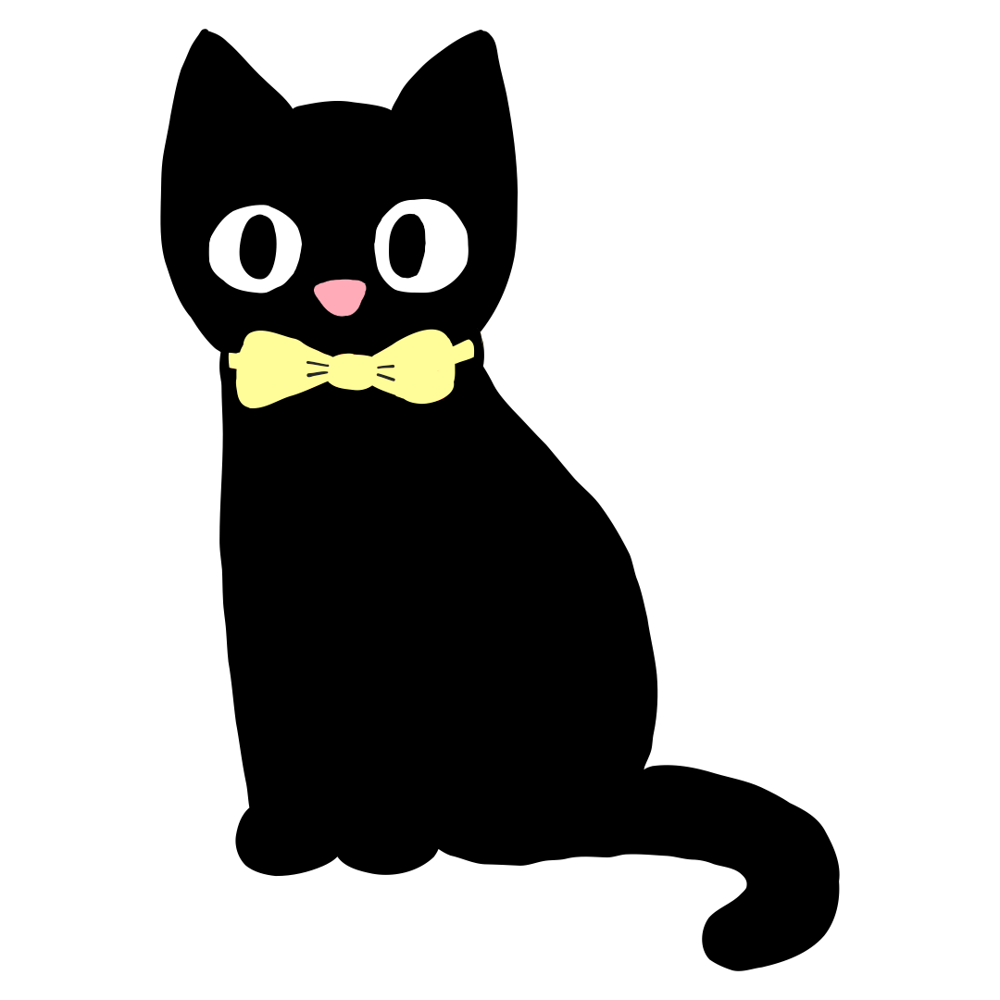
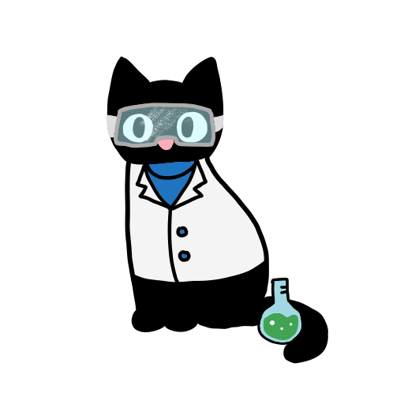

An AI-Powered Academic Ally
Created by college students, for college students.
Meet T.O.M.
Powered by Google’s Gemini API through the Google AI Studio, the Tabby of Motivation or T.O.M. is an AI-powered web app that provides helpful
support and encouragement to college students as they navigate the stressful ins and outs of managing their academic lives.

How Was T.O.M. Made?
This web application was written in HTML/CSS, JavaScript, and Python on Visual Studio Code, with the assistance of front-end designing tools like Figma.
To enable most of its core features, T.O.M. leverages Gemini API through the Google AI Studio. Specifically, generating T.O.M.'s wisdom, accepting user
requests and preferences in the Schedule Builder feature, and customizing the look of the Tomodoro feature based on user inputs.
T.O.M.’s front end was a collaborative design effort completed using Figma, with elements from all team members comprising the final design. These included a
color scheme and site layout proposed by Om, page transitions and responsive elements added by Stephen, detailed pop up UI elements created by Justin, and
hand-drawn T.O.M. illustrations by Claire. We are immensely proud of how an identifying piece of each person’s work can be seen in the front-end of T.O.M.

On the back-end, T.O.M. relies on a Django framework in order to implement its customized chatbot interfaces and facilitate user interactions with the Gemini API.
This framework allows us to generate customized queries to send to the Gemini API to receive the exact results we want, and use those results in our features.
To enable users to hear T.O.M.’s meowjestic voice for themselves, we also included a text-to-speech feature utilizing the SpeechSynthesis interface of the Web Speech API.
We embarked on a journey of exploration through this project, employing a variety of tools foreign to nearly all of us when we began. This not only allowed us to create
a dynamic project page but also significantly enhanced our technical skillset, and we're feline quite accomplished with the results of this project!